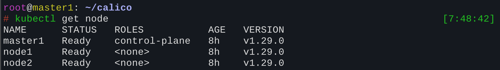
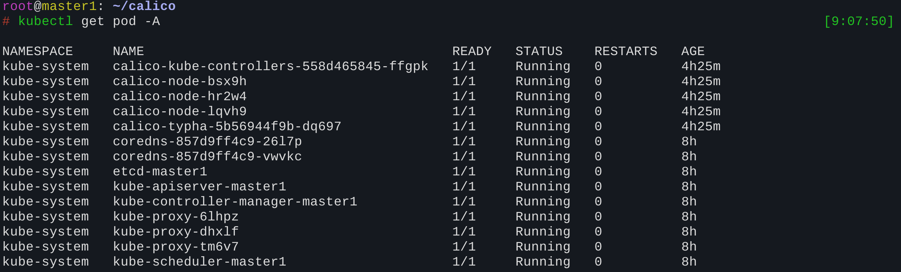

本文介绍了如何在一主两从的架构下搭建 Kubernetes 集群，详细步骤包括安装 Docker、配置网络转发、安装 kubeadm 等。还介绍了 Calico 网络插件的安装和配置，以及集群中各个组件的作用。
一主两从集群架构
需要在同一网络中创建三台机器，一台作为Master，另外两台作为Node。
可以按照这里的教程进行创建，完成基本的配置后，直接完整克隆即可。
配置集群
安装各种包
1 | dnf install -y ipvsadm |
关闭swap分区
1 | swapoff -a |
K8S中每个Node都有自己的相关内存监控信息，开启Swap可能导致K8S获取信息出错，官方强烈建议关闭。
修改主机名
1 | hostnamectl set-hostname master1 |
其他两台机器类似设置成node1和node2。
为了方便起见，可以在/etc/hosts下保存这几个主机的IP和名称信息，后面都可以用名称互相访问。
1 | 127.0.0.1 localhost localhost.localdomain localhost4 localhost4.localdomain4 |
开启基础网络转发
1 | echo 'net.ipv4.ip_forward=1' >> /etc/sysctl.conf |
之后可以通过sysctl -p查看是否设置成功。
安装docker
换docker源
1 | dnf config-manager --add-repo https://mirrors.aliyun.com/docker-ce/linux/centos/docker-ce.repo |
安装docker
1 | dnf -y install docker-ce |
创建docker服务
1 | mkdir -p /etc/systemd/system/docker.service.d |
安装cri-docker，服务K8S
在早期版本（K8s ≤ 1.23）中，Kubernetes 默认支持直接使用 Docker 作为容器运行时。 但实际上，K8s 并不直接依赖 Docker 本身，而是依赖容器运行时接口（CRI）。
而 Docker 本身 并没有实现 CRI，K8s 是通过一个叫做
dockershim的适配层 与 Docker 通信的。但从 K8s v1.24 起，官方彻底移除了内置的dockershim，即不再原生支持 Docker，必须使用符合 CRI 的运行时，比如 containerd、CRI-O。
cri-dockerd，它是社区从旧版dockershim中拆分出来的独立项目，可以用这个继续充当适配层。
1 | wget https://github.com/Mirantis/cri-dockerd/releases/download/v0.3.9/cri-dockerd-0.3.9.amd64.tgz |
配置 cri-docker 服务
1 | # vim /usr/lib/systemd/system/cri-docker.service |
创建socket通信，建立K8S与cri-docker之间的链接
1 | # vim /usr/lib/systemd/system/cri-docker.socket |
启动cri-docker
1 | systemctl daemon-reload |
初始化K8S
安装kubeadm 更加便捷地创建K8S集群
首先添加kubernetes源配置
1 | # vim /etc/yum.repos.d/kubernetes.repo |
然后安装K8S的几个核心组件
1 | dnf install -y kubelet-1.29.0 kubectl-1.29.0 kubeadm-1.29.0 |
kubelet是所有机器都要安装的，它负责和 API Server 通信，接收调度下来的 Pod 任务，并在本地运行
kubectl是命令行工具，装在主节点即可
kubeadm是初始化工具，装在主节点即可
初始化主节点
1 | kubeadm init \ |
将Node节点加入集群
1 | kubeadm join YOUR_MASTER_IP:6443 \ |
[!IMPORTANT]
YOUR_MASTER_IP:6443 告诉node节点API Server的IP和端口，端口默认是6433
--token和--discovery-token-ca-cert-hash都是上一步kubeadm init最后输出的，一定要改成你自己的
上面都配置好后，可以用kubectl get node来查看集群是不是添加成功了(STATUS暂时不用管)

配置Calico网络
先在所有机器上拉取以下镜像(网络有问题就先在本地拉取，然后传到三个机器进行安装)
1 | # 容器网络接口（CNI）规范，负责为 Pod 分配 IP 地址、配置网络接口、设置路由等 |
然后下载Calico配置文件参考
1 | curl https://raw.githubusercontent.com/projectcalico/calico/v3.26.3/manifests/calico-typha.yaml -o calico.yaml |
需要修改：
- CALICO_IPV4POOL_CIDR
修改成自己之前配置的
--pod-network-cidr=10.244.0.0/16 - 修改为 BGP 模式
1 | # Enable IPIP |
最后启动！
1 | kubectl apply -f calico.yaml |
等待一会，kubectl get node可以发现三台机器的status都是ready。
然后我们使用kubectl get pod -A查看三台机器上所有的POD：

calico-kube-controllers-558d465845-ffgpk- 含义: Calico 的 Kubernetes 控制器。
- 作用: 它负责监控 Kubernetes API 中的网络策略 (NetworkPolicy)、IP 地址池等与 Calico 相关的资源。当您创建或修改一个网络策略时，这个控制器会感知到变化，并更新 Calico 的配置，以确保网络规则能够正确实施。它是一个 Deployment，通常只有一个副本。
calico-node-bsx9h,calico-node-hr2w4,calico-node-lqvh9- 含义: Calico 的节点代理程序。
- 作用: 这个 Pod 以 DaemonSet
的形式在集群中的每一个节点（Node）上运行一个实例（后面的随机字符串
bsx9h,hr2w4等是每个 Pod 的唯一标识）。它的核心职责包括：- 网络连接: 为该节点上的所有 Pod 分配 IP 地址，并配置路由规则，确保 Pod 之间可以互相通信。
- 网络策略实施: 在每个节点上应用您定义的网络策略，通过配置 iptables 或 eBPF 规则来控制哪些 Pod 可以访问哪些其他 Pod。
calico-typha-5b56944f9b-dq697- 含义: Calico 的一个可选组件，用于提高大规模集群的性能。
- 作用: 在大型集群中，大量的
calico-node代理都需要和 Kubernetes API Server 通信来获取网络策略等信息，这会给 API Server 带来很大压力。Typha 作为一个中间的连接聚合器，calico-node会连接到 Typha，而 Typha 负责与 API Server 进行单一的连接，然后将信息分发给所有calico-node。这样可以大大减少 API Server 的负载。它是一个 Deployment。
coredns-857d9ff4c9-26l7p,coredns-857d9ff4c9-vwwkc- 含义: 集群的 DNS 服务。
etcd-master1- 含义: Kubernetes 集群的后端数据库。
- 作用:
etcd是一个高可用的键值存储系统。Kubernetes 用它来存储整个集群的所有状态数据，包括 Pod 的定义、服务的配置、节点的状态、密钥 (Secrets) 等等。etcd是集群的“单一事实来源”，是所有组件中最为关键的一个。
kube-apiserver-master1- 含义: Kubernetes API 的入口。
- 作用: API Server 是整个 Kubernetes
控制平面的前端。所有对集群的操作和查询请求（例如来自
kubectl命令、其他控制器或UI界面）都必须经过它。它负责验证请求的合法性、处理请求，并将结果持久化到etcd中。
kube-controller-manager-master1- 含义: Kubernetes 的控制器管理器。
- 作用: 它内部运行着多种控制器（如节点控制器、副本控制器、服务控制器等）。这些控制器通过 API Server 持续监控集群的状态，并努力将“当前状态”调整为用户设置的“期望状态”。例如，当一个 Pod 意外终止，副本控制器会发现副本数不满足期望，并立即创建一个新的 Pod 来替代它。
kube-scheduler-master1- 含义: Kubernetes 的调度器。
- 作用: 它的唯一任务是为新创建的、尚未分配节点的 Pod，寻找一个最合适的节点来运行。调度器会根据 Pod 的资源需求（CPU、内存）、节点的资源状况、亲和性/反亲和性规则、污点 (Taints) 和容忍 (Tolerations) 等多种因素来做出最优决策。
kube-proxy-6lhpz,kube-proxy-dhxlf,kube-proxy-tm6v7- 含义: Kubernetes 的网络代理。
- 作用:
kube-proxy和calico-node一样，也是以 DaemonSet 的形式在集群的每个节点上运行。它的核心职责是维护节点上的网络规则（通常使用 iptables 或 IPVS），以实现 Kubernetes Service 的概念。当您访问一个服务的 ClusterIP 或 NodePort 时，正是kube-proxy配置的规则将流量正确地转发（负载均衡）到该服务背后的一个具体 Pod 上。